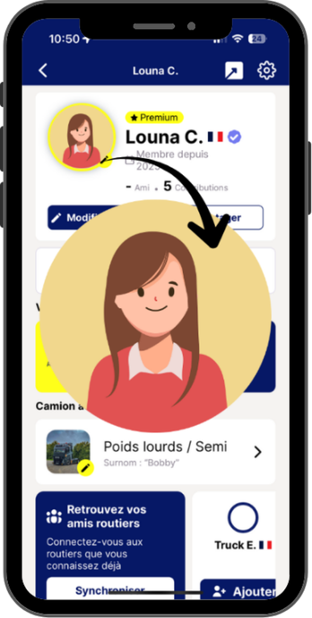
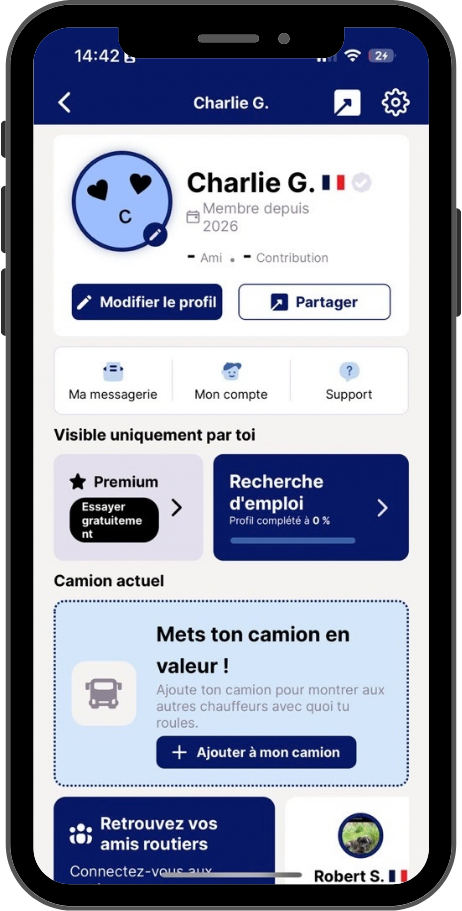

Nouveau : les photos de profil en grand

1
Appuie sur une photo de profil
elle s’affiche en plein écran
2
Ajoute la tienne !
c’est elle que les autres verront en grand


elle s’affiche en plein écran
c’est elle que les autres verront en grand
